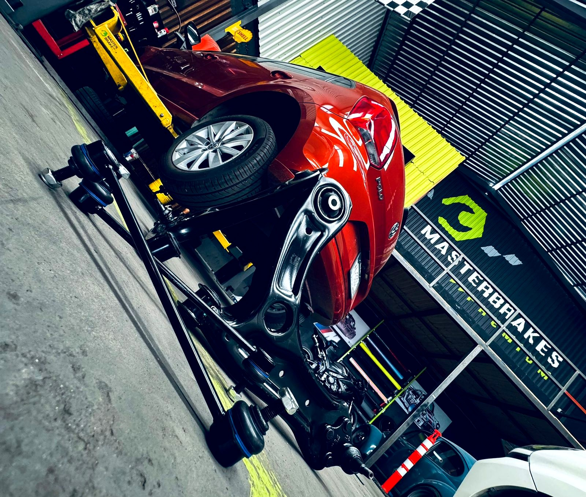

Respuesta estable
Ayuda a mantener aceleración y funcionamiento más parejo.
Si tu auto consume más combustible, responde menos, tarda en encender o el motor ya no trabaja tan parejo como antes, una afinación puede ayudar a recuperar estabilidad y prevenir problemas de mantenimiento.

La afinación no debería ser una lista idéntica para todos los autos. Cada motor tiene intervalos, componentes y necesidades distintas según kilometraje, historial y forma de uso.
En MASTERBRAKES PREMIUM empezamos por revisar el estado general, historial disponible y síntomas. A partir de ahí definimos qué mantenimiento sí corresponde y qué todavía puede esperar.
El objetivo es conservar un motor que encienda correctamente, responda de forma estable y no consuma de más por filtros, bujías o elementos de mantenimiento vencidos.
Beneficios de una afinación bien planteada
Ayuda a mantener aceleración y funcionamiento más parejo.
Atiende elementos de desgaste antes de que generen problemas mayores.
Filtros y encendido en buen estado favorecen una operación eficiente.
Se revisan elementos relacionados con encendido y mantenimiento programado.
No se sustituye por rutina lo que todavía está en buen estado.
Te explicamos el alcance y el costo antes de realizar el servicio.
El contenido exacto depende del vehículo, pero estos son algunos de los puntos que podemos evaluar y atender.
Revisamos filtros de aire y otros elementos de mantenimiento de acuerdo con la aplicación.
Se inspeccionan y sustituyen cuando el intervalo o condición lo requieren.
Verificamos niveles relevantes y te avisamos si existe alguna condición fuera de lo esperado.
Podemos revisar suciedad o funcionamiento irregular cuando hay síntomas relacionados.
Si existe testigo o comportamiento irregular, la lectura electrónica puede complementar el diagnóstico.
Confirmamos funcionamiento general después del mantenimiento realizado.
Cuéntanos qué notas, elige tu sucursal y recibe orientación antes de realizar cualquier trabajo.